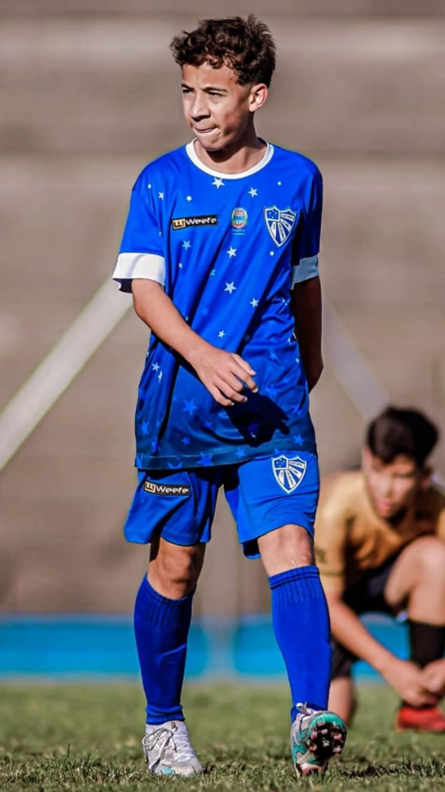
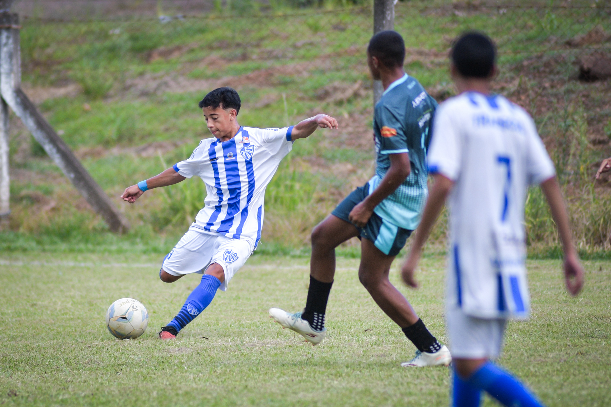
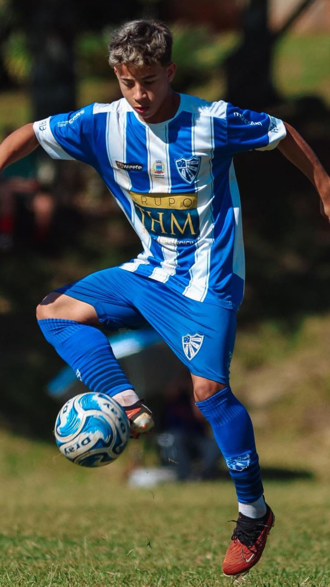
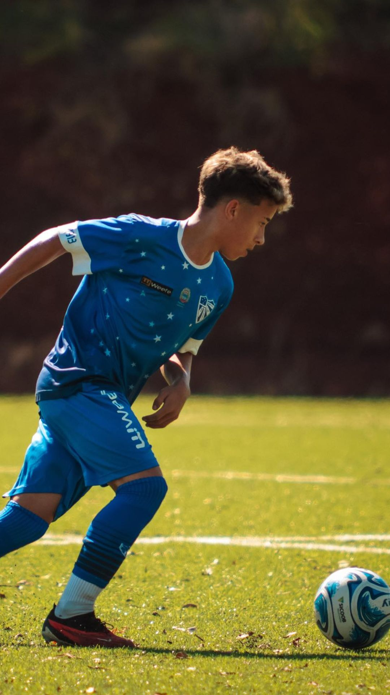
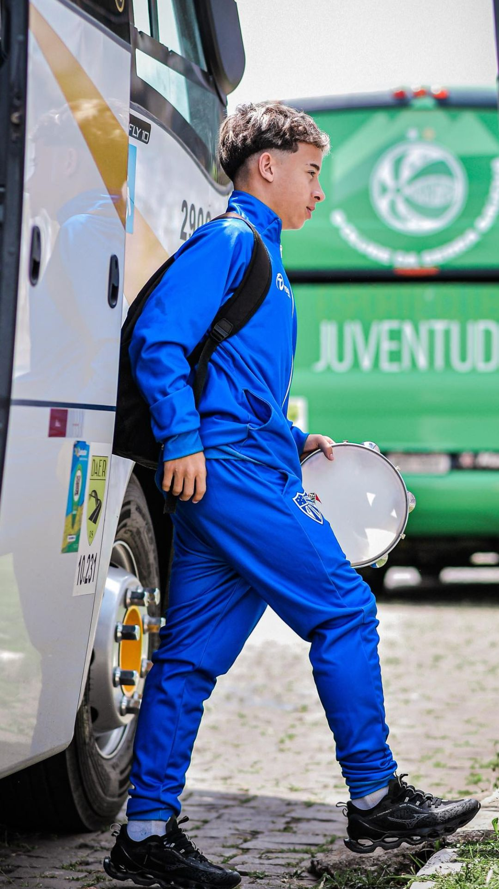
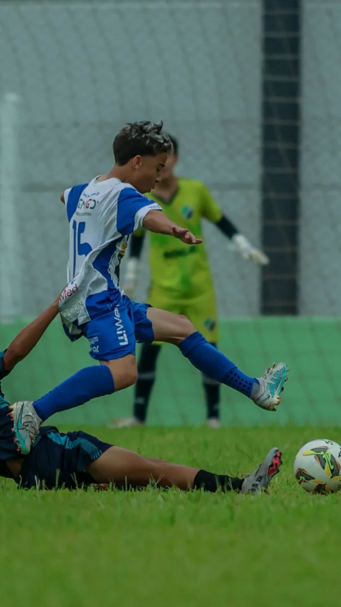
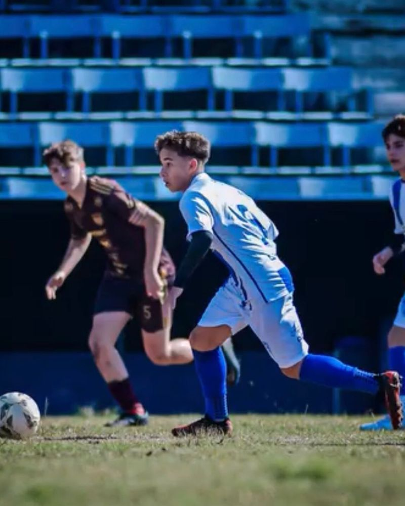

✦ FUTTALENTO · JORNADA
✦ FUTTALENTO · JORNADARyan Coelho · Ryanzinho
Uma trajetória de formação registrada em diferentes equipes, competições e temporadas. Conheça os marcos públicos, as notícias do acervo e os canais vinculados ao perfil.

Futebol de base
Atuação: meio-campo.
Equipe no histórico da temporada: E.C. Cruzeiro-RS.
O histórico publicado reúne formação inicial, passagens por equipes de base e registros da Copa Maravilha 2026. As informações são apresentadas como registros de acervo, não como avaliação de scout certificada.
Jornada resumida
- GrêmioRegistro de formação e primeiras competições.
- São JoséHistórico publicado de participação em torneios da base.
- Cruzeiro-RSRegistros esportivos da Copa Maravilha e temporada.
Momentos esportivos
Registros fotográficos da trajetória no futebol de base. Imagens em enquadramento integral, sem cortar o atleta.
Deslize para ver mais fotos no celular · Toque para ampliar

.jpeg)
.jpeg)











Publicação e identificação detalhada das imagens estão sujeitas à autorização dos responsáveis.
Parcerias e retorno comercial
O novo FutTalento propõe registrar apoiadores, exposição, visitas, cupons e vendas validadas por estabelecimento. Para este atleta, não há números comerciais verificados nem lista de patrocinadores confirmada para exibição.
Índice FutTalento
Audiência verificada, histórico de formação e entregas de parceiros — pontuação em formação.
Carregando indicadores...
Sem divulgação de data completa de nascimento, peso ou localização específica do menor. Em caso de correção ou solicitação familiar: contato@futtalento.com.br.